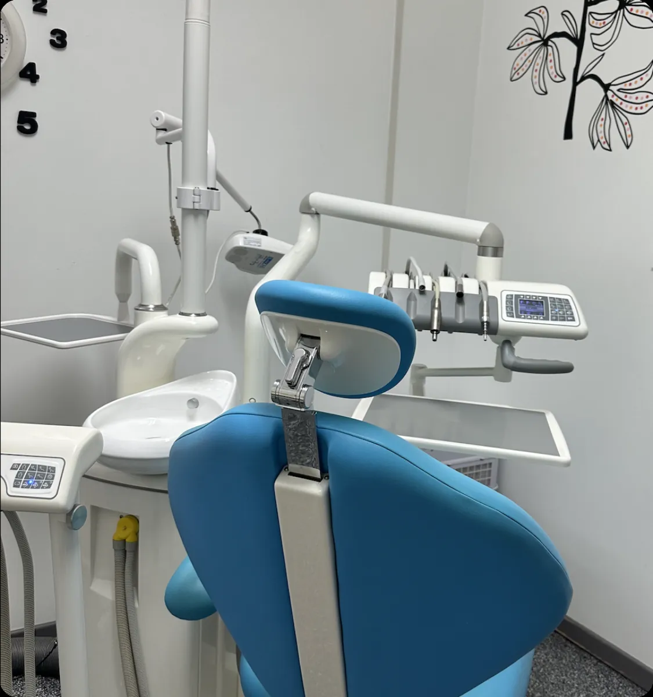

Esperienza e passione al servizio del tuo sorriso.
Dal 1986 lo studio del Dr. Chant Kasparian è un punto di riferimento per la salute dentale a Noventa di Piave, con un'esperienza che supera i 40 anni nel settore.

Il Dr. Chant Kasparian
Odontoiatra con più di 40 anni di esperienza. Laureato alla ULB (Université Libre de Bruxelles), apre lo studio a Noventa più di 30 anni fa. Master in Francia, Svizzera, USA e Svezia, vanta il premio come Dentista Nobel Biocare.
- 40+anni di esperienza clinica
- 1986anno di apertura dello studio
Pronti a iniziare il tuo percorso di salute dentale?
Prenota subito una visita di consulenza gratuita e scopri come possiamo migliorare il tuo sorriso.